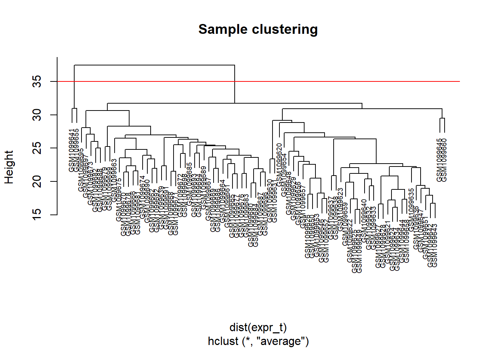

# Setup
library(GEOquery)Lade nötiges Paket: BiobaseLade nötiges Paket: BiocGenericsLade nötiges Paket: generics
Attache Paket: 'generics'Die folgenden Objekte sind maskiert von 'package:base':
as.difftime, as.factor, as.ordered, intersect, is.element, setdiff,
setequal, union
Attache Paket: 'BiocGenerics'Die folgenden Objekte sind maskiert von 'package:stats':
IQR, mad, sd, var, xtabsDie folgenden Objekte sind maskiert von 'package:base':
anyDuplicated, aperm, append, as.data.frame, basename, cbind,
colnames, dirname, do.call, duplicated, eval, evalq, Filter, Find,
get, grep, grepl, is.unsorted, lapply, Map, mapply, match, mget,
order, paste, pmax, pmax.int, pmin, pmin.int, Position, rank,
rbind, Reduce, rownames, sapply, saveRDS, table, tapply, unique,
unsplit, which.max, which.minWelcome to Bioconductor
Vignettes contain introductory material; view with
'browseVignettes()'. To cite Bioconductor, see
'citation("Biobase")', and for packages 'citation("pkgname")'.Setting options('download.file.method.GEOquery'='auto')Setting options('GEOquery.inmemory.gpl'=FALSE)library(limma)
Attache Paket: 'limma'Das folgende Objekt ist maskiert 'package:BiocGenerics':
plotMAlibrary(WGCNA)Warning: Paket 'WGCNA' wurde unter R Version 4.5.2 erstelltLade nötiges Paket: dynamicTreeCutWarning: Paket 'dynamicTreeCut' wurde unter R Version 4.5.2 erstelltLade nötiges Paket: fastclusterWarning: Paket 'fastcluster' wurde unter R Version 4.5.2 erstellt
Attache Paket: 'fastcluster'Das folgende Objekt ist maskiert 'package:stats':
hclust
Attache Paket: 'WGCNA'Das folgende Objekt ist maskiert 'package:stats':
corlibrary(iCheck)Lade nötiges Paket: lumiKeine Methoden in Paket 'RSQLite' gefunden für Anforderung: 'dbListFields' beim Laden von 'lumi'Lade nötiges Paket: gplots
---------------------
gplots 3.3.0 loaded:
* Use citation('gplots') for citation info.
* Homepage: https://talgalili.github.io/gplots/
* Report issues: https://github.com/talgalili/gplots/issues
* Ask questions: https://stackoverflow.com/questions/tagged/gplots
* Suppress this message with: suppressPackageStartupMessages(library(gplots))
---------------------
Attache Paket: 'gplots'Das folgende Objekt ist maskiert 'package:stats':
lowesslibrary(dplyr)
Attache Paket: 'dplyr'Das folgende Objekt ist maskiert 'package:lumi':
combineDas folgende Objekt ist maskiert 'package:Biobase':
combineDie folgenden Objekte sind maskiert von 'package:BiocGenerics':
combine, intersect, setdiff, setequal, unionDas folgende Objekt ist maskiert 'package:generics':
explainDie folgenden Objekte sind maskiert von 'package:stats':
filter, lagDie folgenden Objekte sind maskiert von 'package:base':
intersect, setdiff, setequal, unionlibrary(pheatmap)
library(mclust)Warning: Paket 'mclust' wurde unter R Version 4.5.2 erstelltPackage 'mclust' version 6.1.2
Type 'citation("mclust")' for citing this R package in publications.
Attache Paket: 'mclust'Das folgende Objekt ist maskiert 'package:dplyr':
countDas folgende Objekt ist maskiert 'package:limma':
logsumexpoptions(stringsAsFactors = FALSE)
disableWGCNAThreads()
# Load data
gse <- getGEO("GSE45238", GSEMatrix = TRUE)Found 1 file(s)GSE45238_series_matrix.txt.gzeset <- gse[[1]]
expr <- exprs(eset)
pheno <- pData(eset)
annot <- fData(eset)
rownames(pheno) <- pheno$geo_accession
pheno <- pheno[colnames(expr), ]
stopifnot(identical(rownames(pheno), colnames(expr)))
dim(expr); head(pheno); head(annot)[1] 858 80 title geo_accession status submission_date
GSM1099620 non-OSCC_01N GSM1099620 Public on Jan 07 2015 Mar 18 2013
GSM1099621 non-OSCC_02N GSM1099621 Public on Jan 07 2015 Mar 18 2013
GSM1099622 non-OSCC_03N GSM1099622 Public on Jan 07 2015 Mar 18 2013
GSM1099623 non-OSCC_04N GSM1099623 Public on Jan 07 2015 Mar 18 2013
GSM1099624 non-OSCC_05N GSM1099624 Public on Jan 07 2015 Mar 18 2013
GSM1099625 non-OSCC_06N GSM1099625 Public on Jan 07 2015 Mar 18 2013
last_update_date type channel_count source_name_ch1
GSM1099620 Jan 07 2015 RNA 1 adjacent non-tumor epithelia
GSM1099621 Jan 07 2015 RNA 1 adjacent non-tumor epithelia
GSM1099622 Jan 07 2015 RNA 1 adjacent non-tumor epithelia
GSM1099623 Jan 07 2015 RNA 1 adjacent non-tumor epithelia
GSM1099624 Jan 07 2015 RNA 1 adjacent non-tumor epithelia
GSM1099625 Jan 07 2015 RNA 1 adjacent non-tumor epithelia
organism_ch1 characteristics_ch1 characteristics_ch1.1
GSM1099620 Homo sapiens gender: male age: 46
GSM1099621 Homo sapiens gender: male age: 49
GSM1099622 Homo sapiens gender: male age: 56
GSM1099623 Homo sapiens gender: male age: 50
GSM1099624 Homo sapiens gender: male age: 36
GSM1099625 Homo sapiens gender: male age: 48
characteristics_ch1.2 characteristics_ch1.3 molecule_ch1
GSM1099620 Stage: II tissue: oral epithelia total RNA
GSM1099621 Stage: II tissue: oral epithelia total RNA
GSM1099622 Stage: III tissue: oral epithelia total RNA
GSM1099623 Stage: III tissue: oral epithelia total RNA
GSM1099624 Stage: II tissue: oral epithelia total RNA
GSM1099625 Stage: IVA tissue: oral epithelia total RNA
extract_protocol_ch1
GSM1099620 Total RNA was extracted from 40 pairs of OSCC patients using the miRNeasy Mini Kit (Qiagen, #217004) according to the manufacturer’s protocol.
GSM1099621 Total RNA was extracted from 40 pairs of OSCC patients using the miRNeasy Mini Kit (Qiagen, #217004) according to the manufacturer’s protocol.
GSM1099622 Total RNA was extracted from 40 pairs of OSCC patients using the miRNeasy Mini Kit (Qiagen, #217004) according to the manufacturer’s protocol.
GSM1099623 Total RNA was extracted from 40 pairs of OSCC patients using the miRNeasy Mini Kit (Qiagen, #217004) according to the manufacturer’s protocol.
GSM1099624 Total RNA was extracted from 40 pairs of OSCC patients using the miRNeasy Mini Kit (Qiagen, #217004) according to the manufacturer’s protocol.
GSM1099625 Total RNA was extracted from 40 pairs of OSCC patients using the miRNeasy Mini Kit (Qiagen, #217004) according to the manufacturer’s protocol.
label_ch1
GSM1099620 Cy3
GSM1099621 Cy3
GSM1099622 Cy3
GSM1099623 Cy3
GSM1099624 Cy3
GSM1099625 Cy3
label_protocol_ch1
GSM1099620 Cy3 labled cRNA (PCR product) were prepared with illumina GoldenGate assay
GSM1099621 Cy3 labled cRNA (PCR product) were prepared with illumina GoldenGate assay
GSM1099622 Cy3 labled cRNA (PCR product) were prepared with illumina GoldenGate assay
GSM1099623 Cy3 labled cRNA (PCR product) were prepared with illumina GoldenGate assay
GSM1099624 Cy3 labled cRNA (PCR product) were prepared with illumina GoldenGate assay
GSM1099625 Cy3 labled cRNA (PCR product) were prepared with illumina GoldenGate assay
taxid_ch1 hyb_protocol
GSM1099620 9606 Standard Illumina hybridization protocol
GSM1099621 9606 Standard Illumina hybridization protocol
GSM1099622 9606 Standard Illumina hybridization protocol
GSM1099623 9606 Standard Illumina hybridization protocol
GSM1099624 9606 Standard Illumina hybridization protocol
GSM1099625 9606 Standard Illumina hybridization protocol
scan_protocol description
GSM1099620 Standard Illumina scanning protocol replicate 1
GSM1099621 Standard Illumina scanning protocol replicate 1
GSM1099622 Standard Illumina scanning protocol replicate 1
GSM1099623 Standard Illumina scanning protocol replicate 1
GSM1099624 Standard Illumina scanning protocol replicate 1
GSM1099625 Standard Illumina scanning protocol replicate 1
data_processing
GSM1099620 The data were normalised using quantile normalisation with IlluminaGUI in R
GSM1099621 The data were normalised using quantile normalisation with IlluminaGUI in R
GSM1099622 The data were normalised using quantile normalisation with IlluminaGUI in R
GSM1099623 The data were normalised using quantile normalisation with IlluminaGUI in R
GSM1099624 The data were normalised using quantile normalisation with IlluminaGUI in R
GSM1099625 The data were normalised using quantile normalisation with IlluminaGUI in R
platform_id contact_name contact_email
GSM1099620 GPL8179 Shine-Gwo,,Shiah davidssg@nhri.org.tw
GSM1099621 GPL8179 Shine-Gwo,,Shiah davidssg@nhri.org.tw
GSM1099622 GPL8179 Shine-Gwo,,Shiah davidssg@nhri.org.tw
GSM1099623 GPL8179 Shine-Gwo,,Shiah davidssg@nhri.org.tw
GSM1099624 GPL8179 Shine-Gwo,,Shiah davidssg@nhri.org.tw
GSM1099625 GPL8179 Shine-Gwo,,Shiah davidssg@nhri.org.tw
contact_department
GSM1099620 National Institute of Cancer Research
GSM1099621 National Institute of Cancer Research
GSM1099622 National Institute of Cancer Research
GSM1099623 National Institute of Cancer Research
GSM1099624 National Institute of Cancer Research
GSM1099625 National Institute of Cancer Research
contact_institute contact_address contact_city
GSM1099620 National Health Research Institutes No. 35, Keyan Rd. Zhunan
GSM1099621 National Health Research Institutes No. 35, Keyan Rd. Zhunan
GSM1099622 National Health Research Institutes No. 35, Keyan Rd. Zhunan
GSM1099623 National Health Research Institutes No. 35, Keyan Rd. Zhunan
GSM1099624 National Health Research Institutes No. 35, Keyan Rd. Zhunan
GSM1099625 National Health Research Institutes No. 35, Keyan Rd. Zhunan
contact_state contact_zip/postal_code contact_country
GSM1099620 Miaoli County 350 Taiwan
GSM1099621 Miaoli County 350 Taiwan
GSM1099622 Miaoli County 350 Taiwan
GSM1099623 Miaoli County 350 Taiwan
GSM1099624 Miaoli County 350 Taiwan
GSM1099625 Miaoli County 350 Taiwan
supplementary_file data_row_count age:ch1 gender:ch1 Stage:ch1
GSM1099620 NONE 858 46 male II
GSM1099621 NONE 858 49 male II
GSM1099622 NONE 858 56 male III
GSM1099623 NONE 858 50 male III
GSM1099624 NONE 858 36 male II
GSM1099625 NONE 858 48 male IVA
tissue:ch1
GSM1099620 oral epithelia
GSM1099621 oral epithelia
GSM1099622 oral epithelia
GSM1099623 oral epithelia
GSM1099624 oral epithelia
GSM1099625 oral epithelia ID SYMBOL ILMN_Gene Search_Key
ILMN_3166935 ILMN_3166935 ILMN_3166935 hsa-miR-329 hsa-miR-329
ILMN_3166938 ILMN_3166938 ILMN_3166938 hsa-miR-424 hsa-miR-424
ILMN_3166940 ILMN_3166940 ILMN_3166940 hsa-miR-137 hsa-miR-137
ILMN_3166941 ILMN_3166941 ILMN_3166941 hsa-miR-376c hsa-miR-376c
ILMN_3166943 ILMN_3166943 ILMN_3166943 hsa-miR-585 hsa-miR-585
ILMN_3166944 ILMN_3166944 ILMN_3166944 hsa-miR-302c hsa-miR-302c
SEQUENCE TargetMatureSeqs TargetMatureName
ILMN_3166935 AACACACCTGGTTAACCTC AACACACCTGGTTAACCTCTTT hsa-miR-329
ILMN_3166938 CAGCAGCAATTCATGTTT CAGCAGCAATTCATGTTTTGAA hsa-miR-424
ILMN_3166940 TATTGCTTAAGAATACGCG TTATTGCTTAAGAATACGCGTAG hsa-miR-137
ILMN_3166941 ACATAGAGGAAATTCCACG AACATAGAGGAAATTCCACGT hsa-miR-376c
ILMN_3166943 TGGGCGTATCTGTATGC TGGGCGTATCTGTATGCTA hsa-miR-585
ILMN_3166944 GCTTCCATGTTTCAGTGG TAAGTGCTTCCATGTTTCAGTGG hsa-miR-302c
miRNA_ID SPOT_ID NumTargets TargetMatureVersion
ILMN_3166935 hsa-miR-329 1 12
ILMN_3166938 hsa-miR-424 1 12
ILMN_3166940 hsa-miR-137 1 12
ILMN_3166941 hsa-miR-376c 1 12
ILMN_3166943 hsa-miR-585 1 12
ILMN_3166944 hsa-miR-302c 1 12
OriginalMatureSeq OriginalMatureName
ILMN_3166935 AACACACCTGGTTAACCTCTTT hsa-miR-329
ILMN_3166938 CAGCAGCAATTCATGTTTTGAA hsa-miR-424
ILMN_3166940 TATTGCTTAAGAATACGCGTAG hsa-miR-137
ILMN_3166941 ACATAGAGGAAATTCCACGTTT hsa-miR-368
ILMN_3166943 TGGGCGTATCTGTATGCTA hsa-miR-585
ILMN_3166944 TAAGTGCTTCCATGTTTCAGTGG hsa-miR-302c
Source Array_Address_Id
ILMN_3166935 Sanger miRNAdb (v_8.2, July 2006) 931
ILMN_3166938 Sanger miRNAdb (v_8.2, July 2006) 1051
ILMN_3166940 Sanger miRNAdb (v_8.2, July 2006) 233
ILMN_3166941 Sanger miRNAdb (v_8.2, July 2006) 976
ILMN_3166943 Sanger miRNAdb (v_8.2, July 2006) 1761
ILMN_3166944 Sanger miRNAdb (v_8.2, July 2006) 864
Illumicode
ILMN_3166935 CGGCAGATAGCACGTTTCGACT
ILMN_3166938 GGGCACTATTACTCGCTAACCG
ILMN_3166940 GTACAGTCTCGCGGTGCCTAAG
ILMN_3166941 GTTTCCACGACTTGCAGTACGG
ILMN_3166943 GTCGGTTAGTGATGTACGGCCA
ILMN_3166944 CCGTTTGGACGTAAGCAGGGCC
Oligo
ILMN_3166935 ACTTCGTCAGTAACGGACCGGCAGATAGCACGTTTCGACTAACACACCTGGTTAACCTC
ILMN_3166938 ACTTCGTCAGTAACGGACGGGCACTATTACTCGCTAACCGCAGCAGCAATTCATGTTT
ILMN_3166940 ACTTCGTCAGTAACGGACGTACAGTCTCGCGGTGCCTAAGTATTGCTTAAGAATACGCG
ILMN_3166941 ACTTCGTCAGTAACGGACGTTTCCACGACTTGCAGTACGGACATAGAGGAAATTCCACG
ILMN_3166943 ACTTCGTCAGTAACGGACGTCGGTTAGTGATGTACGGCCATGGGCGTATCTGTATGC
ILMN_3166944 ACTTCGTCAGTAACGGACCCGTTTGGACGTAAGCAGGGCCGCTTCCATGTTTCAGTGG
U3_Seq Ploidy Species Probe_MatchOrder Chromosome
ILMN_3166935 ACTTCGTCAGTAACGGAC diploid human 2 14,14
ILMN_3166938 ACTTCGTCAGTAACGGAC diploid human 1 X
ILMN_3166940 ACTTCGTCAGTAACGGAC diploid human 1 1
ILMN_3166941 ACTTCGTCAGTAACGGAC diploid human 1 14
ILMN_3166943 ACTTCGTCAGTAACGGAC diploid human 1 5
ILMN_3166944 ACTTCGTCAGTAACGGAC diploid human 1 4
Probe_Coordinates Probe_Chr_Orientation
ILMN_3166935 100,562,923,100,563,000 +,+
ILMN_3166938 133508398 -
ILMN_3166940 98284258 -
ILMN_3166941 100575821 +
ILMN_3166943 168623217 -
ILMN_3166944 113788994 -# Probe filtering
colnames(annot) [1] "ID" "SYMBOL" "ILMN_Gene"
[4] "Search_Key" "SEQUENCE" "TargetMatureSeqs"
[7] "TargetMatureName" "miRNA_ID" "SPOT_ID"
[10] "NumTargets" "TargetMatureVersion" "OriginalMatureSeq"
[13] "OriginalMatureName" "Source" "Array_Address_Id"
[16] "Illumicode" "Oligo" "U3_Seq"
[19] "Ploidy" "Species" "Probe_MatchOrder"
[22] "Chromosome" "Probe_Coordinates" "Probe_Chr_Orientation"unique(annot$miRNA_version)NULLis_mature_v12 <- annot$TargetMatureVersion == 12
is_control <- grepl("control|spike|U6|snoR", annot$SYMBOL, ignore.case = TRUE)
keep_probes <- is_mature_v12 & !is_control
expr <- expr[keep_probes, ]
annot <- annot[keep_probes, ]
dim(expr)[1] 830 80head(annot) ID SYMBOL ILMN_Gene Search_Key
ILMN_3166935 ILMN_3166935 ILMN_3166935 hsa-miR-329 hsa-miR-329
ILMN_3166938 ILMN_3166938 ILMN_3166938 hsa-miR-424 hsa-miR-424
ILMN_3166940 ILMN_3166940 ILMN_3166940 hsa-miR-137 hsa-miR-137
ILMN_3166941 ILMN_3166941 ILMN_3166941 hsa-miR-376c hsa-miR-376c
ILMN_3166943 ILMN_3166943 ILMN_3166943 hsa-miR-585 hsa-miR-585
ILMN_3166944 ILMN_3166944 ILMN_3166944 hsa-miR-302c hsa-miR-302c
SEQUENCE TargetMatureSeqs TargetMatureName
ILMN_3166935 AACACACCTGGTTAACCTC AACACACCTGGTTAACCTCTTT hsa-miR-329
ILMN_3166938 CAGCAGCAATTCATGTTT CAGCAGCAATTCATGTTTTGAA hsa-miR-424
ILMN_3166940 TATTGCTTAAGAATACGCG TTATTGCTTAAGAATACGCGTAG hsa-miR-137
ILMN_3166941 ACATAGAGGAAATTCCACG AACATAGAGGAAATTCCACGT hsa-miR-376c
ILMN_3166943 TGGGCGTATCTGTATGC TGGGCGTATCTGTATGCTA hsa-miR-585
ILMN_3166944 GCTTCCATGTTTCAGTGG TAAGTGCTTCCATGTTTCAGTGG hsa-miR-302c
miRNA_ID SPOT_ID NumTargets TargetMatureVersion
ILMN_3166935 hsa-miR-329 1 12
ILMN_3166938 hsa-miR-424 1 12
ILMN_3166940 hsa-miR-137 1 12
ILMN_3166941 hsa-miR-376c 1 12
ILMN_3166943 hsa-miR-585 1 12
ILMN_3166944 hsa-miR-302c 1 12
OriginalMatureSeq OriginalMatureName
ILMN_3166935 AACACACCTGGTTAACCTCTTT hsa-miR-329
ILMN_3166938 CAGCAGCAATTCATGTTTTGAA hsa-miR-424
ILMN_3166940 TATTGCTTAAGAATACGCGTAG hsa-miR-137
ILMN_3166941 ACATAGAGGAAATTCCACGTTT hsa-miR-368
ILMN_3166943 TGGGCGTATCTGTATGCTA hsa-miR-585
ILMN_3166944 TAAGTGCTTCCATGTTTCAGTGG hsa-miR-302c
Source Array_Address_Id
ILMN_3166935 Sanger miRNAdb (v_8.2, July 2006) 931
ILMN_3166938 Sanger miRNAdb (v_8.2, July 2006) 1051
ILMN_3166940 Sanger miRNAdb (v_8.2, July 2006) 233
ILMN_3166941 Sanger miRNAdb (v_8.2, July 2006) 976
ILMN_3166943 Sanger miRNAdb (v_8.2, July 2006) 1761
ILMN_3166944 Sanger miRNAdb (v_8.2, July 2006) 864
Illumicode
ILMN_3166935 CGGCAGATAGCACGTTTCGACT
ILMN_3166938 GGGCACTATTACTCGCTAACCG
ILMN_3166940 GTACAGTCTCGCGGTGCCTAAG
ILMN_3166941 GTTTCCACGACTTGCAGTACGG
ILMN_3166943 GTCGGTTAGTGATGTACGGCCA
ILMN_3166944 CCGTTTGGACGTAAGCAGGGCC
Oligo
ILMN_3166935 ACTTCGTCAGTAACGGACCGGCAGATAGCACGTTTCGACTAACACACCTGGTTAACCTC
ILMN_3166938 ACTTCGTCAGTAACGGACGGGCACTATTACTCGCTAACCGCAGCAGCAATTCATGTTT
ILMN_3166940 ACTTCGTCAGTAACGGACGTACAGTCTCGCGGTGCCTAAGTATTGCTTAAGAATACGCG
ILMN_3166941 ACTTCGTCAGTAACGGACGTTTCCACGACTTGCAGTACGGACATAGAGGAAATTCCACG
ILMN_3166943 ACTTCGTCAGTAACGGACGTCGGTTAGTGATGTACGGCCATGGGCGTATCTGTATGC
ILMN_3166944 ACTTCGTCAGTAACGGACCCGTTTGGACGTAAGCAGGGCCGCTTCCATGTTTCAGTGG
U3_Seq Ploidy Species Probe_MatchOrder Chromosome
ILMN_3166935 ACTTCGTCAGTAACGGAC diploid human 2 14,14
ILMN_3166938 ACTTCGTCAGTAACGGAC diploid human 1 X
ILMN_3166940 ACTTCGTCAGTAACGGAC diploid human 1 1
ILMN_3166941 ACTTCGTCAGTAACGGAC diploid human 1 14
ILMN_3166943 ACTTCGTCAGTAACGGAC diploid human 1 5
ILMN_3166944 ACTTCGTCAGTAACGGAC diploid human 1 4
Probe_Coordinates Probe_Chr_Orientation
ILMN_3166935 100,562,923,100,563,000 +,+
ILMN_3166938 133508398 -
ILMN_3166940 98284258 -
ILMN_3166941 100575821 +
ILMN_3166943 168623217 -
ILMN_3166944 113788994 -# Normalization
expr_log2 <- log2(expr + 1)
expr_norm <- normalizeBetweenArrays(expr_log2, method = "quantile")
rownames(expr_norm) <- rownames(expr)
colnames(expr_norm) <- colnames(expr)
# QC: PCA & sample clustering
op <- par(mar = c(5, 4, 4, 10), xpd = TRUE)
expr_t <- t(expr_norm)
pca <- prcomp(expr_t, scale. = TRUE)
sample_ids <- colnames(expr_norm)
highlight_ids <- c("GSM1099641", "GSM1099655")
point_col <- ifelse(sample_ids %in% highlight_ids, "red", "black")
plot(pca$x[,1], pca$x[,2],
xlab = "PC1", ylab = "PC2",
pch = 19,
col = point_col,
main = "PCA after normalization")
text(pca$x[,1], pca$x[,2],
labels = sample_ids,
pos = 3, cex = 0.6,
col = point_col)
legend("topright",
inset = c(-0.55, 0),
legend = c("Other samples", "Outliers (to remove)"),
col = c("black", "red"),
pch = 19,
bty = "n")
par(op)
sampleTree <- hclust(dist(expr_t), method = "average")
plot(sampleTree, labels = colnames(expr_norm), cex = 0.6,
main = "Sample clustering")
abline(h = 35, col = "red")
pdf("SampleClustering.pdf", width = 14, height = 10)
plot(sampleTree,
labels = colnames(expr_norm),
cex = 0.6,
main = "Sample clustering dendrogram")
abline(h = 35, col = "red")
dev.off()png
2 # Patient IDs & remove outlier pairs
pheno$patient_id <- sub(".*_(\\d+)[NT]$", "\\1", pheno$title)
pheno$patient_id <- as.character(pheno$patient_id)
outlier_samples <- c("GSM1099641", "GSM1099655")
outlier_patient_ids <- unique(pheno$patient_id[pheno$geo_accession %in% outlier_samples])
keep_samples <- !pheno$patient_id %in% outlier_patient_ids
expr_norm <- expr_norm[, keep_samples]
pheno <- pheno[keep_samples, ]
pheno <- pheno[colnames(expr_norm), ]
stopifnot(identical(rownames(pheno), colnames(expr_norm)))
dim(expr_norm)[1] 830 76table(pheno$patient_id)
01 02 03 04 05 06 07 08 09 10 11 12 13 14 15 16 17 18 19 20 21 23 24 25 26 27
2 2 2 2 2 2 2 2 2 2 2 2 2 2 2 2 2 2 2 2 2 2 2 2 2 2
28 29 30 31 32 33 34 35 37 38 39 40
2 2 2 2 2 2 2 2 2 2 2 2